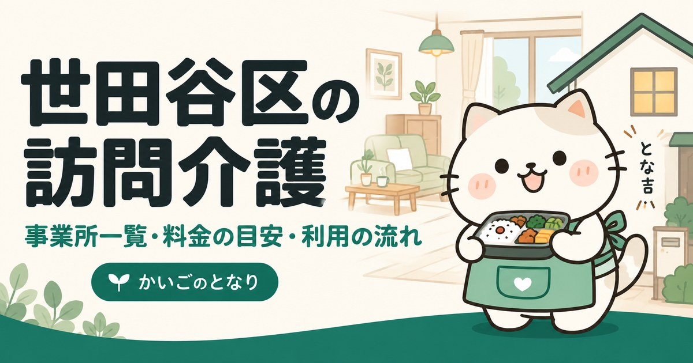

豊島区の訪問介護事業所一覧｜料金の目安と選び方

東京都豊島区で訪問介護（ホームヘルプ）を探している方へ。区内にある63件の事業所から60件を連絡先つきで掲載し、あわせて自己負担額の目安、ヘルパーに頼めること・頼めないこと、相談から利用開始までの流れをまとめました。はじめて介護保険を使う方は、まず「高齢者総合相談センター」への相談から始めるのが近道です。
目次
数字で見る豊島区の訪問介護
- 区内の事業所
- 63件23区中15位（多い順）
- 65歳以上1万人あたり
- 11.3件23区中13位（多い順）
- 高齢化率
- 18.9%23区中17位（高い順）
- 要介護・要支援の認定
- 12,233人65歳以上の21.5%
事業所数は東京都福祉局の指定事業所一覧（2026年9月1日時点）、人口は住民基本台帳（2026年1月1日時点）から計算。区の統計をくわしく見る
豊島区で訪問介護を探すとき、最初に押さえること
豊島区には訪問介護事業所が63件あります。相談窓口である高齢者総合相談センターは区内に8か所あり、担当する地区が決まっています。数が多いほど選択肢は広がりますが、そのぶん「どれも同じに見える」状態にもなります。絞り込みの軸は距離ではなく、希望する曜日・時間帯にヘルパーを確保できるかです。
豊島区では地域包括支援センターを「高齢者総合相談センター」と呼び、区内各地に設置しています。要介護認定の申請方法、ケアマネジャー探し、事業所の選び方まで無料で相談できます。担当の窓口はお住まいの町名で決まりますので、連絡前にご自宅の町域を確認しておくと話が早く進みます。
はじめて介護保険を使う方は、要介護認定の申請から利用開始までの流れを先にご覧ください。申請から実際にサービスが始まるまで、1か月から1か月半かかります。
豊島区の訪問介護事業所一覧
豊島区内の訪問介護事業所から60件を掲載しています（2026年9月時点）。区内の全件から事業所番号の順に等間隔で抽出しています。区内には63件の事業所があり、全件は厚生労働省「介護サービス情報公表システム」で確認できます。掲載順は事業所の優劣を示すものではありません。
60 / 60件を表示
「場所」は事務所の所在地です。訪問サービスは近くの町からも来てもらえます。
提供曜日の記載がない2件は、曜日で絞ると表示されません。
1ケアリッツ巣鴨
南大塚1-31-17マイスターSY202株式会社ケアリッツ・アンド・パートナーズ
事業所番号 1370502658
2しもとり訪問介護
池袋本町4-8-2-101クレスト本町霜鳥恒産株式会社
事業所番号 1370705111
4株式会社 大起エンゼルヘルプ 豊島ケアセンター
池袋4-11-4メゾンドール池袋101株式会社大起エンゼルヘルプ
事業所番号 1371600170
6有限会社 あさくらケアハウス ヘルパーステーション
南大塚2-43-4ブロッサム南大塚1F有限会社あさくらケアハウス
事業所番号 1371600428
8ニチイケアセンター豊島
池袋4-27-5和田ビル1階株式会社ニチイ学館
事業所番号 1371600691
9バリアフリーサポート巣鴨訪問介護事業所
巣鴨2-4-2 岡田ビル705有限会社バリアフリー・サポート
事業所番号 1371600873
10マルシモホームヘルプサービス
南大塚2-31-11共栄大塚ビル3階有限会社マルシモ
事業所番号 1371601574
12ケアリッチ
南池袋2-6-12宮城ビル2F株式会社ケアリッチ
事業所番号 1371601780
13サン・ケアセンター
西巣鴨3-15-10UKビル203有限会社サン
事業所番号 1371601954
15やすら木
雑司が谷2-22-18-1F特定非営利活動法人やすらぎ
事業所番号 1371601970
16アクセスポイント池袋
池袋2-55-13合田ビル1階株式会社アライブ
事業所番号 1371602085
18ゆきわりそうこの町サービス
南長崎6-19-5ゆきわりそう1階社会福祉法人地球郷
事業所番号 1371602267
20東京保健生活協同組合介護センター健生豊島
雑司が谷3-3-17 2階東京保健生活協同組合
事業所番号 1371602572
22さわやかケアポートとしま・訪問介護
北大塚1-12-15協同興業北大塚ビルウエルシアパートナーズ株式会社
事業所番号 1371602994
23株式会社 サン・キューブ
南大塚3-21-8鈴和南大塚マンション101
事業所番号 1371603117
24セントケア豊島
東池袋3-20-21広宣ビル2階セントケア東京株式会社
事業所番号 1371603281
25ソシオケアサービス
西池袋2-36-1ソフトタウン池袋802ソシオ株式会社
事業所番号 1371603356
27日介センター豊島
要町1-28-1 2階-A株式会社日本介護センター
事業所番号 1371603521
28ＡＬＳＯＫヘルパーステーション池袋
池袋2-55-12セピア池袋Ⅱ705号ＡＬＳＯＫ介護株式会社
事業所番号 1371603653
29ケアリッツ池袋
池袋3-58-21浅井ビル1F株式会社ケアリッツ・アンド・パートナーズ
事業所番号 1371603919
30ハート介護サービス豊島
南長崎5-10-13コーポ五郎久保101株式会社ハート介護サービス
事業所番号 1371604008
32本町まんぞく介護
池袋本町1-46-5 2F株式会社まんぞく介護
事業所番号 1371604628
33訪問介護ステーションすずらん
千早2-28-4ドマーニ千早102号室株式会社カインディア
事業所番号 1371604883
34エブリーサポート池袋
要町2-26-5メゾン池袋要町206株式会社クレオズ
事業所番号 1371605161
35ハート介護サービス池袋
西池袋2-36-1ソフトタウン池袋811株式会社ハート介護サービス
事業所番号 1371605252
38西池袋ホームヘルプサービス
西池袋3-33-6SHKビル2階合同会社倭ケアサービス
事業所番号 1371605427
39ケアリッツ大塚北
北大塚3-34-8マイハウス大塚1階株式会社ケアリッツ・アンド・パートナーズ
事業所番号 1371605500
40ＳＯＭＰＯケア 豊島 訪問介護
東池袋5-44-15東信東池袋ビル4階ＳＯＭＰＯケア株式会社
事業所番号 1371605518
41おおきなき豊島
南大塚3-51-2 大塚斉藤ビル201号室株式会社日本エルダリーケアサービス
事業所番号 1371605625
42くれあ訪問介護
東池袋3-15-2ライオンズマンション池袋708号室株式会社クレアフューチャー
事業所番号 1371605641
43訪問介護 あすなろ
東池袋1-36-7アルテール東池袋417特定非営利活動法人あすなろの会
事業所番号 1371605658
44リラス訪問介護センター
東池袋1-23-8東池袋ISKビル7階株式会社フロンティア
事業所番号 1371605732
45よつばケアセンター
巣鴨3-31-2アルカディア篠B棟305株式会社よつば
事業所番号 1371605849
46ケアリッツ椎名町
南長崎2-5-2コレクティフイリデッサン101株式会社ケアリッツ・アンド・パートナーズ
事業所番号 1371605856
48ラック訪問介護
南大塚3-44-13クレスト南大塚602株式会社ラック・メディカルサービス
事業所番号 1371605930
49ケアリッツ東池袋
南池袋4-20-9サンロードビル403株式会社ケアリッツ・アンド・パートナーズ
事業所番号 1371606045
51東池袋桑の実園ヘルパーステーション
東池袋5-39-18社会福祉法人桑の実園福祉会
事業所番号 1371606086
52幸歩
東池袋3-1-4メゾンサンシャイン1219号室株式会社歩歩
事業所番号 1371606110
53ユースタイルケア 豊島センター
池袋本町3-26-12豊島ビル201株式会社ｇｒｏｗｐｌａｃｅ
事業所番号 1371606128
56しずかヘルパーステーション
南大塚1-46-18ハイツタカノ 105号株式会社ＡｎｙｗｈｅｒｅＤｏｏｒ
事業所番号 1371606185
57ネコロボマン訪問介護巣鴨店
巣鴨1-40-4メゾン清水103株式会社泰規
事業所番号 1371606227
58訪問介護東駿プランニング
池袋本町1-32-3エルファーロ池袋本町201株式会社東駿プランニング
事業所番号 1371606250
59ユースタイルケア 北東京 重度訪問介護
北大塚2-17-4大塚キャリアビル5階ユースタイルラボラトリー株式会社
事業所番号 1371606268
60アースサポート豊島
上池袋1-7-7アースサポート株式会社
事業所番号 1371700392
条件に合う事業所はありません。条件を1つ外してみてください。
上記60件は、2026-09-21に豊島区および各事業者の公表情報で確認した内容です。営業時間・対応エリア・空き状況は変動しますので、連絡の前に必ず公式情報をご確認ください。掲載内容の訂正・削除は、お問い合わせからご依頼いただければ理由の説明なしで削除します。
掲載60事業所の内訳
豊島区内で掲載している60事業所を、所在地・運営法人・サービス提供日の3つの軸で集計しました。事業所ごとの詳細は上の一覧をご覧ください。
所在町域
訪問介護は、事業所から車や自転車で行ける範囲が実質的な対応エリアになります。豊島区内は20の町域に分かれており、同じ区内でも端から端までは距離があります。まずは自宅に近い町域の事業所から問い合わせるのが効率的です。
| 町域 | 掲載事業所 |
|---|---|
| 池袋 | 株式会社 大起エンゼルヘルプ 豊島ケアセンター、株式会社エヌ・テイ豊島、ニチイケアセンター豊島、さくら介護サービス豊島、アクセスポイント池袋、ＡＬＳＯＫヘルパーステーション池袋、ケアリッツ池袋、星月よ |
| 南大塚 | ケアリッツ巣鴨、有限会社 あさくらケアハウス ヘルパーステーション、マルシモホームヘルプサービス、株式会社 サン・キューブ、おおきなき豊島、ラック訪問介護、しずかヘルパーステーション |
| 東池袋 | セントケア豊島、ＳＯＭＰＯケア 豊島 訪問介護、くれあ訪問介護、訪問介護 あすなろ、リラス訪問介護センター、東池袋桑の実園ヘルパーステーション、幸歩 |
| 池袋本町 | しもとり訪問介護、わたぼうし、いずみ介護センター本町、本町まんぞく介護、ユースタイルケア 豊島センター、訪問介護東駿プランニング |
| 南池袋 | 株式会社グレイス・ケアー、ケアリッチ、ほほえみケアサービス、合同会社 Ｋ．すずらん、ケアリッツ東池袋 |
| 西池袋 | 有里サポート有限会社、ソシオケアサービス、ハート介護サービス池袋、西池袋ホームヘルプサービス、いずみ介護センター |
| 南長崎 | 有限会社ホームケアながさき、ゆきわりそうこの町サービス、ハート介護サービス豊島、ケアリッツ椎名町 |
| 巣鴨 | バリアフリーサポート巣鴨訪問介護事業所、よつばケアセンター、ケア２１ 巣鴨、ネコロボマン訪問介護巣鴨店 |
| 北大塚 | さわやかケアポートとしま・訪問介護、ケアリッツ大塚北、ユースタイルケア 北東京 重度訪問介護 |
| 要町 | ケアステーション オープラス、日介センター豊島、エブリーサポート池袋 |
| 雑司が谷 | やすら木、東京保健生活協同組合介護センター健生豊島 |
| 駒込 | 有限会社 寿晴介護サービス、訪問介護事業所ケアリス |
| 上池袋 | アースサポート豊島 |
| 千早 | 訪問介護ステーションすずらん |
| 西巣鴨 | サン・ケアセンター |
| 長崎 | ケアフレンド豊島 |
運営法人の種別
どの種別が良いということはありませんが、強みの出方が違います。掲載60件のうち株式会社 が41件と最も多く、全国展開の事業所はサービスが標準化され自費プランも整う。地域密着の小規模は融通が利くのが特徴です。
| 法人の種別 | 件数 | 傾向 |
|---|---|---|
| 株式会社 | 41件 | 全国展開の事業所はサービスが標準化され自費プランも整う。地域密着の小規模は融通が利く |
| 有限会社 | 10件 | 地域で長く続けている小規模事業所が多く、担当が変わりにくい |
| 合同会社 | 3件 | 近年に開設された事業所が多く、新しい体制で運営している |
| 社会福祉法人 | 3件 | 特別養護老人ホームなどを併設していることが多く、住み替えまで見据えて相談しやすい |
| ＮＰＯ法人 | 2件 | 地域の助け合いから始まった事業所が多く、制度の隙間の相談にのってくれることがある |
| 協同組合・生協 | 1件 | 組合員同士の支え合いが土台。地域に根を張った活動が長い |
詳しくは訪問介護事業所の選び方で解説しています。
ヘルパーが来られる曜日
掲載60件のうち、日曜日も対応するところが52件、土曜日まで含めると55件です。残る2件は公表データに記載がありません。最初に詰まるのは曜日が合うヘルパーを確保できるかで、豊島区でもここが合わないと事業所が近くても話が進みません。
| サービス提供日 | 件数 | こんな方に |
|---|---|---|
| 日曜日も | 52件 | 週末も家族が休めない場合の受け皿 |
| 土曜日まで | 3件 | 日曜だけ別の手段が要る |
| 平日のみ | 3件 | 土日はほかと組み合わせる |
| 記載なし | 2件 | 公表データに記載なし。直接ご確認を |
上の曜日はサービスを提供する曜日で、事務所の電話がつながる時間帯とは別です。訪問できる時間帯は各事業所へご確認ください。
豊島区の料金は「1級地」
訪問介護の自己負担は「単位数 × 1単位あたりの単価 × 負担割合」で決まります。豊島区を含む東京23区は地域区分で最も高い1級地にあたり、1単位＝11.40円です。全国の「その他地域」（10.00円）と比べると、同じサービスでも約14％高くなります。
| よく使われるサービス | 単位数 | 1割負担 |
|---|---|---|
| 身体介護 20分以上30分未満 | 244単位 | 約279円 |
| 身体介護 30分以上1時間未満 | 387単位 | 約442円 |
| 生活援助 20分以上45分未満 | 179単位 | 約204円 |
※令和6年度介護報酬改定にもとづく基本報酬です。2026年6月の期中改定は処遇改善加算を中心とした改定で、上の単位数は変わっていません（最終確認日：2026年9月22日）。実際の請求には処遇改善加算などが上乗せされ、負担割合が2割・3割の方は金額が変わります。全サービスの単位数、8段階の地域区分、区分支給限度基準額、負担が重いときに使える仕組みは訪問介護の料金のしくみにまとめています。
問い合わせの前に確認しておくこと
豊島区の事業所に電話をかける前に、次の3点を手元に用意しておくと、1回の電話で話が決まります。
- ご自宅の町名・番地同じ豊島区内でも、事業所によって対応する町域が違います。上の一覧の「対応エリア」は目安なので、住所を伝えて確認するのが確実です。
- 必要な曜日と時間帯朝の起床介助と夕方の食事介助は依頼が集中します。「火・木の朝7時台」のように具体的に伝えてください。
- 要介護認定の状況認定済みなら要介護度を、申請中ならその旨を。未申請なら、事業所より先に高齢者総合相談センターへ相談してください。
よくある質問
豊島区で訪問介護を使うには、まず何をすればいいですか？
お住まいの地区を担当する「高齢者総合相談センター（地域包括支援センター）」への相談が最初の一歩で、豊島区では要介護認定の申請方法からケアマネジャー（居宅介護支援事業所）の紹介まで無料で案内してもらえます。認定を待つあいだに事業所を下調べしておくと、豊島区内で希望の曜日・時間帯が埋まる前に押さえられます。
豊島区には訪問介護事業所が何件ありますか？
東京都が公表している指定事業所一覧では、2026年9月1日時点で豊島区内に63件の訪問介護事業所が指定を受けています。本ページではそのうち60件を連絡先つきで掲載しています。全件は厚生労働省「介護サービス情報公表システム」で確認できます。
豊島区の担当窓口は、どうやって調べればいいですか？
高齢者総合相談センターは区内に8か所あり、担当地区が町名で決まっています。ご自宅の町名がわかれば、豊島区の公式ホームページか、下の町域一覧で見当がつきます。どこに連絡してよいか迷う場合は、豊島区内でいちばん近いセンターに電話すれば担当へつないでもらえます。
豊島区の掲載事業所は、どこを見て絞り込めばいいですか？
上の内訳表が目安になります。日曜にもヘルパーに来てほしい場合は52件、土曜まででよければ55件が対象です。そのうえで、ご自宅の町名を伝えて対応エリアに入っているかを確認するのが確実です。曜日はサービスを提供する日で、事務所の電話がつながる時間帯とは別です。
訪問介護の自己負担はいくらくらいですか？
豊島区は介護報酬の地域区分で1級地（1単位＝11.40円）にあたるため、自己負担1割なら身体介護20分以上30分未満で約279円、生活援助20分以上45分未満で約204円が目安になります。処遇改善加算や区分支給限度基準額まで含めた考え方は豊島区に限らず共通なので、「訪問介護の料金のしくみ」にまとめました。
豊島区の事業所は、途中で変更できますか？
変更できます。担当のケアマネジャーに相談すれば、ケアプランを見直したうえで豊島区内の別の訪問介護事業所に切り替えられます。豊島区は掲載60件・区内63件と候補があるので、相性やシフトの都合で変更する方は珍しくありません。
豊島区の高齢化率は18.9%、要介護認定を受けている人は12,233人
豊島区の人口296,129人のうち、65歳以上は55,981人（18.9%）です。23区の平均20.2%より低い水準にあたります。65歳以上のうち32,336人は75歳以上で、介護が必要になる人が増えはじめる年代です。
| 項目 | 豊島区 |
|---|---|
| 総人口 | 296,129人 |
| 65歳以上（高齢化率） | 55,981人（18.9%） |
| うち75歳以上 | 32,336人（10.9%） |
| 第1号被保険者（65歳以上） | 56,838人 |
| 要支援1・2の認定 | 3,506人 |
| 要介護1〜5の認定 | 8,727人 |
| 認定率（認定者÷第1号被保険者） | 21.5%（23区平均21.9%） |
豊島区で要介護・要支援の認定を受けているのは12,233人、区内の訪問介護は63件なので、1事業所あたり194人という計算になります。認定者が全員このサービスを使うわけではないため、混み具合そのものではありません。
認定者数は第1号被保険者（65歳以上）の再掲値で、40〜64歳の方は含みません。出典はページ下部に記載しています。
豊島区の町域一覧（対応エリアの目安）
豊島区の町域は20。五十音では7行にわたり、最も多いのはか行の4件です。掲載事業者の対応範囲は町域単位で分かれているため、問い合わせのときは「豊島区西巣鴨」のように町名まで伝えてください。
- 池袋
- 池袋本町
- 要町
- 上池袋
- 北大塚
- 駒込
- 巣鴨
- 千川
- 雑司が谷
- 高田
- 高松
- 千早
- 長崎
- 西池袋
- 西巣鴨
- 東池袋
- 南池袋
- 南大塚
- 南長崎
- 目白
※町域ごとの事業者ページは、掲載できる事業者が3件以上そろった町域から順次公開します。
豊島区の他のサービスを探す
東京23区から訪問介護を探す
- 東京都福祉局「居宅サービス事業所一覧」（CC BY 4.0）
- 厚生労働省「介護サービス情報公表システム」オープンデータ（2026年6月30日時点／サービス提供日・公式サイト）
- 豊島区「高齢者総合相談センター一覧」
- 豊島区「要介護・要支援認定の申請からサービス利用までの流れ」
- 厚生労働省「指定居宅サービス介護給付費単位数の算定構造」訪問介護費（令和6年度改定）／介護報酬の地域区分（1級地・1単位11.40円）
- 日本郵便 郵便番号データにもとづく豊島区の町域一覧
- 東京都総務局統計部「住民基本台帳による東京都の世帯と人口」（令和8年1月1日現在／年齢3区分別人口・5歳階級別人口）
- 東京都福祉局「介護保険事業状況報告（月報）」令和8年6月分（保険者別・第1号被保険者数／要介護認定者数）
- 区内事業所数：東京都公表の指定事業所一覧にもとづく実数（2026年9月1日時点）
最終確認日：2026-09-21／制度・料金は改定される場合があります。ご利用前に各窓口・各事業者で最新情報をご確認ください。